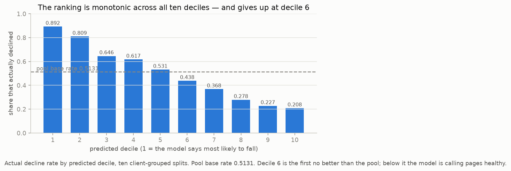
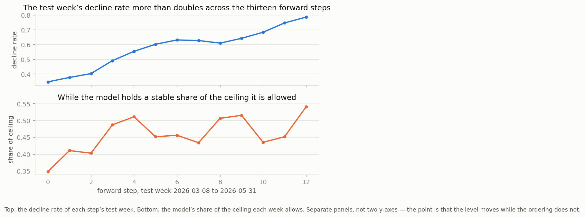
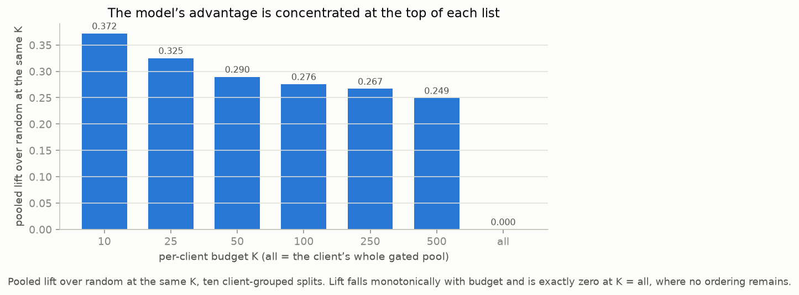

FlyRank ML internship · capstone
Ranking 202,073 pages by risk of decline — and the three things the ranking cannot tell you.
An SEO team will always have more content pages than hours to review, so the practical question is not whether to prioritise but which pages to open first. This paper answers it for 202,073 pages across 53 clients, using ninety days of search-performance history to rank every page by how likely it is to lose impressions over the following thirty days. The ranking is a ridge regression on four window aggregates, validated by holding out whole clients rather than random rows, and scored against the alternative it has to beat — the same filter with its pages left in arbitrary order.
It beats that alternative on 13 of 13 forward weekly steps and holds 45.8% of the improvement available to it in each one, while the share of pages declining more than doubled over the same weeks. The ordering held where the level did not.
It is decision support only. The model never edits a page, it cannot say how much traffic any page will lose, and nothing here is a causal claim.
FlyRank's workflow rebuilds a review queue for each client every week. A queue is a list of the client's own content pages, ordered by how likely each one is to decline, with a short explanation attached to each entry so the person opening it knows what they are looking at. The team works down the list; when the list runs out, they stop.
Three things about that sentence define the problem. The unit being ranked is one content item at one decision date — a page, on a particular day, with the history available on that day. The output is an ordering, not a verdict: nothing is labelled "bad" and no page is edited automatically. And the queue is per client, so a page only ever competes with its own client's pages.
The cost of a wrong call is lopsided. A page that is genuinely sliding and gets reviewed next week may have lost a month of compounding impressions by then; a page that is fine and gets reviewed anyway costs one person one look. That asymmetry is what makes recall at the top of the list the thing worth buying, and it is why the metric used throughout this paper is precision within a fixed budget of reviews rather than accuracy over all pages.
The obvious alternative is a rule, and it fails in a specific way. A simple threshold on recent change looks reasonable until you plot the underlying percentages: raw change values in this data reach 44,900%, because a page that served a handful of impressions and then served none produces a percentage built on a denominator near zero. A rule keyed to those values ends up ranking arithmetic accidents. Whatever replaces it has to be robust to a denominator that can vanish — a constraint that shapes the label, the evaluation, and every negative result in this paper.
The work uses the gated FlyRank/internship-warehouse release: fact_content_daily_performance, dim_content and dim_clients. Access is by a Hugging Face token supplied at runtime — never written into a cell, since the repository is public. Every feature in the model is drawn from the window 2025-12-31 to 2026-03-30; the label window opens 2026-03-31. No feature window overlaps the label window, and the timeline was verified rather than assumed.
Getting to that sentence took a full contract pass over the warehouse. Every column in dim_content is accounted for — four identifiers, two pipeline-metadata fields, and twenty candidates each either in the model or excluded with a measured reason, rather than a judgement call. The exclusions were as consequential as the inclusions:
| Excluded | Reason |
|---|---|
| The target columns and the window they are computed from | The label itself. |
| The fixed-window query table | Its window runs 2026-04-02 → 2026-06-30 and overlaps the label window, so any column from it leaks the future. |
| Content optimisation dates | 87.8% missing, and the sparsity plus the naming suggest they populate only when FlyRank's own system acted on a page — a product decision recorded as though it were a page property. A second check measured them as sitting after the decision point for 100.0% of populated rows. |
| Traffic-channel columns | No plausible link to an impressions-based label, and the AI channel flags are 100.0% zero across the window — zero variance. |
| All hashed ID columns | Pseudonyms. Used for grouping, joining and splitting; never as features. |
| Client-level fields | They hold one row per client, so they are constant within a client and cannot reorder a client's own queue. Correct to exclude, and never previously written down. |
Position is zero-based. The warehouse follows Google Search Console's bulk-export convention, where 0 is the top rank, so an average position has to be computed as a sum of positions over a sum of impressions and then offset. The repository's own starter file uses the opposite rule, where a zero means missing — and applying that rule here deletes each page's best days for 53.4% of the cohort. Which convention this warehouse follows was not assumed; the leakage notebook carries a six-check experiment that established it.
Position is impression-weighted, not a mean of daily means. A page's busy days now count for more than its quiet ones. Every aggregate in the model is computed by summing and then dividing, never by averaging per-day rates.
The future window compares against the recent thirty days, not the ninety-day average. Using the longer average buries real recoveries behind stale history: the measured recovery rate moves from 18.3% to 28.2% under the shorter baseline.
An off-by-one in that window moved the headline. Dividing the thirty-day future window by thirty rather than by thirty-one or ninety moved the label from 49.62% to 50.95% — the kind of error that is invisible in a chart and decisive in a metric.
One leak got through the first audit, and the way it got through is the lesson. The leakage hunt checked the timeline of the fact tables carefully and never asked the same question of the dimension table. dim_content turned out to be an export-time snapshot rather than a point-in-time record: its update date falls after the decision point for the large majority of cohort pages, and a single bulk date accounts for 204,409 items, or 39.3% of all content. A feature built from it was leaking, and has been removed. A related consequence: a filter that excluded deleted and unpublished pages was itself selecting on the outcome window — judging a March decision by a July status — and was reverted.
Missingness is not neutral here either. Four keyword columns run from 0% to 100% missing across the three content types: present for every page of one type, absent for every page of another. A median fill would stamp the content type into the feature — every page of the missing type would receive an identical value that a tree splits on immediately, and the model would appear to use search volume while actually using content type. Those columns are left unimputed.
Client-identifying content: none. No client names, domains, URLs, page titles or raw queries appear in this paper or in the notebooks behind it. The only identifiers are pseudonymous hashes, shown to demonstrate the grain of the data and never as a row-level dump. Every number here is an aggregate.
The starting point is a rule, and it is a sensible one: review a page if it is old enough that decay is the likely story, if it is among the pages that matter for its own client, and if it still has something left to lose.
gate: age >= 180 days
impressions over 90 days >= that client's own median
share of traffic retained > 0.5 (a page that already lost half is not preventable)
score: ageThe gate is worth having. It lifts the decline rate from the cohort's 0.4228 to 0.5245. The ranking inside it is not: scored on ten client-grouped splits, ordering by age returns 0.5041 at a budget of 100 reviews, against 0.5432 for the same gate with its pages left in arbitrary order.
| Ten-split mean | value | range |
|---|---|---|
| pool decline rate | 0.5245 | 0.3180 – 0.7435 |
| precision at 100, ranked by age | 0.5041 | 0.3265 – 0.6709 |
| precision at 100, gate + random order | 0.5432 | 0.3597 – 0.6690 |
The rule's ordering sits −0.0391 below random and beats it on only 2 of 10 seeds. This is not a small embarrassment; it is the reason the baseline is defined the way it is. The number to beat is the gate with its pages in arbitrary order, not the rule's 0.5041 — shipping a ranking that underperforms shuffling would be indefensible, and a model that merely matched the gate would be adding nothing.
That bar was first estimated at 0.5432 from a single shuffle per seed. It was later re-estimated at 0.5132 over 20 draws per seed, with a per-seed standard deviation of 0.0178, which is the figure used throughout this paper. 0.5132 is the bar.
Two earlier versions of the rule are kept in the notebook rather than deleted. The first scored 0.9427 and looked far stronger than anything that followed — but its pool had been pre-selected to 80.4% decline, its persistence null returned 1.0000, meaning it was detecting pages that had already fallen rather than predicting, and six of its top twenty had already lost 93–96% of their traffic. A number that good, carried forward unexamined, would have set a bar that never existed.
Each page's forward rate over the thirty days after the decision date is compared with its baseline rate, both passed through asinh before subtracting. The inverse hyperbolic sine behaves like a logarithm for large values but is finite at and below zero, which matters because 7.4% of the cohort reaches zero impressions, rising to 13.7% at the second decision point. Where both are defined the two transforms agree at rank correlation +0.9546; where the ratio is undefined, asinh still produces a number.
The transform also deflates percentage swings at trivial volume, which a ratio exaggerates. The same 50% drop, at four different page sizes:
| before, per day | after, per day | log ratio | asinh difference |
|---|---|---|---|
| 0.1 | 0.05 | −0.6931 | −0.0499 |
| 1.0 | 0.50 | −0.6931 | −0.4002 |
| 10.0 | 5.00 | −0.6931 | −0.6858 |
| 100.0 | 50.00 | −0.6931 | −0.6931 |
A ratio calls all four the same fifty-percent loss. Given a cohort whose median dead page ran 0.13 impressions a day, that deflation is the difference between a label about pages and a label about arithmetic.
A continuous target was chosen over the inherited three-way binary split for the same reason. Binarising made a 21% dip and a 95% collapse the same label while a 19% dip and a 21% one became opposite classes, and it split the cohort three ways.
A page that reaches zero impressions is not a page with a low score — it needs a redirect or a merge, which is a different and less reversible decision. Those pages carry their own ranked flag: 1,334 at the first decision point, over 34 clients. 87% of pages reaching zero were already running under one impression a day, so an ungated flag would have buried the 136 that lost ten or more a day.
The flag is ranked rather than merely listed, because it does not reliably fit any review budget: a median of 10 pages per client, but a tail reaching 195 at the first decision point and 663 at the second, with 4 clients overrunning a budget of 100 at the first and 9 at the second. Ranked, an overrun surfaces the largest losses first. Unranked, it would be least usable for exactly the clients worst affected.
Twenty candidate features were examined against a model that ships four. The one that mattered most is the one that was removed:
| Candidate feature | permutation importance | Outcome |
|---|---|---|
| peak ratio against own history | 0.6034 | shipped |
| impression-weighted average position | 0.0073 | shipped |
| impressions, ninety days | 0.0061 | shipped |
| prior trend | 0.0038 | shipped |
| content age | −0.0645 | removed |
Content age scored −0.0645: shuffling it improved held-out fit. Dropping it gained on every metric at once — rank agreement 0.5302 → 0.5546, precision at 100 0.7563 → 0.7612, AUC 0.7584 → 0.7693. It correlates −0.1981 with the target and was collinear enough with the peak-ratio feature to split its coefficient. It was also the only point-in-time value in the set — a date difference rather than an aggregate — and the only one validation removed. Every feature that survived is a window aggregate, and effectively the model is one feature: the peak ratio holds 0.6034 against 0.0073 or less for everything else.
Correlation with the target barely predicts whether a feature helps. The prior-trend term correlates +0.5438 with the target and contributes 0.0038. URL character count correlates −0.2225 and costs −0.0185. The peak ratio absorbs what the others carry, which is why a feature-selection pass built on correlation alone would have kept the wrong four.
The two features carrying the signal are the two carrying the artefact. A second, restricted set was built to include only columns that are universally available and that share no arithmetic with the target — content age, ninety-day impressions and average position. That definition necessarily excludes the prior-trend and peak-ratio terms, and those are precisely the two that carry the ordering. Restricted that way, logistic regression's rank agreement falls to 0.0553, against 0.5152 for the same algorithm on the full set. Removing the artefact and removing the signal turn out to be the same operation, which is why the artefact was measured, published, and left in place rather than designed around.
No categorical variable is in the final feature set, and the reason is coverage rather than usefulness. Two of the three — main intent and competition level — are unusable because two clients have none of either, so including them would rank data coverage rather than page health. The third, content type, is universally present and moves precision at 100 from 0.7563 to 0.7562.
Four algorithms were compared on two feature sets across the same ten client-grouped splits. Ridge led on the declared primary metric, rank agreement, by +0.0150 over logistic regression and by more over the two gradient-boosting variants. Its margin on precision at 100 over logistic is only +0.0063 — inside seed noise — so the model choice rests on the rank metric and on ridge's stability rather than on a decisive win.
Boosting placed third for a reason worth recording: with R² near zero for every model, a squared-error objective spends its capacity on the part of the target that is not predictable. A ranking objective is the principled follow-up, not a hyperparameter sweep — and when that follow-up was actually run, a rank-transformed target bought +0.0004, leaving boosting 0.0168 behind ridge. The hypothesis was withdrawn rather than left standing as an excuse.
The same predictions serve the whole lane. Sorting them two ways and splitting on prior state gives three queues — decline +0.2111 over random, momentum +0.1734, recovery +0.0962 — where the inherited three-label design would have needed three separate models.
The model is linear on standardised features with all coefficients positive, so a page reaches the top of the queue by being low on something. The four reason codes, and the share of top-of-queue slots each one explains, are:
| Reason code | coefficient | share of queue top |
|---|---|---|
| running below its own 90-day average | 0.5149 | 82.3% |
| little search volume left to lose | 0.0586 | 16.9% |
| impressions already falling over the last 30 days | 0.0296 | 0.7% |
| ranks well on average | 0.0004 | 0.2% |
That distribution is a warning as much as a feature. One code — running below its own 90-day average — explains 82.3% of the pages at the top of the queue, and the honest reading of a reason code is that it says where to look, never why. It restates the input that drove the score rather than explaining the page, and a reviewer who reads it as a diagnosis will be misled. It is a signpost, not a cause.
Most of this project's settings were originally inferred from public pricing copy because no authoritative answer existed. FlyRank later answered directly, and the answers changed four things: the queue is rebuilt weekly; its size is a configurable per-client budget rather than a fixed global top 50; metrics should be reported macro across clients, with pooled figures retained alongside; and the label's outcome window should be swept independently of the rebuild cadence rather than tied to it. Two of the earlier guesses turned out to be right for the wrong reasons, and one recorded "correction" had been a mistake. All model comparisons were run at one budget against one label, so the ordering of models is unaffected by these reversals; what moves is anything phrased as coverage or ceiling, and the reporting convention.
Every model below is scored on the same ten client-grouped splits, with the pool's own decline rate stated beside it. Grouping matters: a random row split, which lets the same client's pages appear in both training and test, inflates the score by +0.091 AUC on the same ten seeds. Precision at 100 is reported both pooled and as a macro average over clients, because the two answer different questions and quoting one alone hides the gap.
| Model | rank agreement | P@100 pooled | P@100 macro | AUC |
|---|---|---|---|---|
| ridge, four shipped features | 0.5546 | 0.7612 | 0.6847 | 0.7693 |
| ridge, full feature set | 0.5302 | 0.7563 | 0.6812 | 0.7584 |
| logistic, full feature set | 0.5152 | 0.7500 | 0.6772 | 0.7519 |
| gradient boosting, regression | 0.4945 | 0.7216 | 0.6567 | 0.7380 |
| gradient boosting, classification | 0.4843 | 0.7298 | 0.6660 | 0.7487 |
| logistic, restricted safe feature set | 0.0553 | 0.5466 | 0.5417 | 0.5436 |
| baseline — gate plus random order | — | 0.5132 | — | 0.5000 |
Two sourcing notes, because this table is the one a reader is most likely to check. The macro column and the four-feature ridge row come from the executed capstone notebook; the remaining rows are the figures the model-selection notebook published on its own ten splits. Re-running them reproduces every linear model to four decimals — the two gradient-boosting rows differ by roughly five thousandths, which is histogram construction varying between scikit-learn builds rather than a difference in the data. And the baseline bar is quoted here as 0.5132, the twenty-draw estimate; the executed comparison cell prints 0.5049 because it draws one shuffle per seed. That gap sits well inside the per-seed standard deviation of 0.0178, which is why the averaged estimate is the one used.
Across the ten predicted deciles the decline rate falls from 0.8923 in the top decile to 0.2081 in the bottom one, a spread of 0.6842 points and monotonic throughout. Decile 6 is the first that is no better than the pool's own base rate. By the bottom decile the model is not merely uninformative — it is identifying pages as healthy, and they decline at well under half the pool rate. Reviewing below the halfway mark is worse than sampling the pool at random.

The model was refit at each of fourteen weekly decision points and used to score the week that followed, giving thirteen forward steps. The proportion of the pool declining rose from 0.3169 to 0.7873 across those points — the pool more than doubles its decline rate over a single quarter. Measured at four monthly decision points instead, the same quantity runs 0.3169 → 0.5131 → 0.6146 → 0.7869. The target the model is aimed at does not hold still, and no grouped split in this project could see that, because every one of them resamples clients at a single date.
| Weekly walk | mean | sd | range |
|---|---|---|---|
| pooled lift | 0.1889 | 0.0489 | 0.1140 – 0.2559 |
| share of ceiling | 45.8% | 5.4% | 34.8% – 54.1% |
| steps beating random | 13 of 13 |

The same walk shows why the headline metric matters. Measured as raw lift, the model appears to collapse: it falls from 0.2559 to 0.1140 over the thirteen steps. Normalised against what was available in each week, it rises from 0.6575 to 0.9135. Raw lift correlates −0.9135 with the base rate, which means a dashboard plotting it would show freefall and trigger a retrain of a model that had not degraded at all. A defensible alert floor is a share of ceiling below 35.0%, set from the observed weekly variation — and that floor is provisional, since it was derived in-sample from the same thirteen steps it was tested on. On this walk it would have fired once.
A ranking that is right on average can still be useless in the specific place it is used, so the failures were measured rather than assumed.
It is reliable exactly where it is confident, and near-random at the edge of what it will pick. Grouping the picks by the score that produced them, precision holds up across the confident bands and then falls away sharply in the marginal one:
| Band of predicted score | precision of its picks |
|---|---|
| first (most confident) | 0.896 |
| second | 0.908 |
| third | 0.922 |
| fourth | 0.961 |
| last (marginal) | 0.442 |
For a queue truncated at a fixed budget that is the right shape of failure — the weak picks sit at the bottom of a list nobody reaches. But it argues for surfacing the score's confidence beside each entry rather than presenting all hundred picks as equivalent.
Performance varies more across clients than across anything else. Per-client precision at 100 on one held-out split spans 0.458 to 0.970. The worst client is not a sample-size artefact — it took 72 picks, where the budget was 100, so the queue took every eligible page and the model never ordered anything. Two other low-scoring clients took 6 and 5 picks and are a sample-size artefact, which is a different failure with a different fix.
The ordering runs monotonically across what actually happened, which no threshold metric could show. Mean predicted percentile, by outcome: large fall 0.3330, small fall 0.4221, stagnant 0.5012, small rise 0.5153, large rise 0.6648. Pages that fell hard are 9x likelier to sit in the predicted-worst decile than the predicted-best; pages that rose hard, 12x the reverse.
Stagnant pages need no special handling. They sit at 0.5012 — the middle of the ordering, where a page with no signal belongs — and reach an extreme outcome 16.97% of the time against 25.42% for large fallers. The inherited three-label design carried a separate "stagnant" class; this measurement is why it does not need one.
About a fifth of the measured gain is arithmetic, and the rest survived the test that killed the earlier findings. The null that broke this project's first headline — replacing each page's real future window with a random thirty-day window from that page's own history, preserving its level and volatility while destroying any information about what comes next — leaves the full models only +0.04 above the null's own base rate, against +0.21 on the real future. This is the first result in the project to survive that test rather than be explained by it, and it is why the number is quoted with the caveat attached instead of suppressed.
The advantage transfers to an unseen month essentially intact, and the first estimate of it was wrong. Trained at the first decision point and scored once at the second, the model returns +0.1291 over random against +0.2436 at home — which reads as retaining 53%, and was reported as decay until the controlled version of the question was run. Holding the test month fixed and moving only the training date, a 92-day-old model scores 0.1238 where a 31-day-old one scores 0.1242: a gap of 0.0009. What falls between the two decision points is the headroom, not the skill — the later pool declines at 0.7873 against 0.5131, so the most any ranker could gain falls from 0.4869 to 0.2131. Measured as capture of what was available, the three forward steps sit in a 33.5% to 58.3% band with a mean of 47.4%, and the last month is the highest of the three at 0.5829. Fresher is still directionally better — the within-month correlation between staleness and lift is −0.7541 — but the largest penalty measured anywhere is 0.0194, against a 0.2415 to 0.1242 swing driven purely by which month is scored. That is the argument for retraining rarely and monitoring the right quantity.
The advantage is concentrated at the top of each list. Lift falls monotonically as the review budget grows: 0.3719 at 10 reviews per client, 0.3250 at 25, 0.2895 at 50, 0.2755 at 100, 0.2667 at 250, and 0.2492 at 500 — against exactly 0.0000 when the budget covers the whole pool, which is the control behaving as a control should. A further finding sits underneath: 13 of 30 clients receive their entire eligible pool within a budget of 100, so for those clients no ranking is happening at all. They are being handed a filter.
And a global queue misallocates its own slots. Split the pool in two by a one-line rule — whether a page is already below its own ninety-day average — and the two halves behave very differently. Pages already below their average decline 76.41% of the time, and the model adds only +0.0787 on top of that filter. Pages that have not started falling decline 40.69% of the time, and there the model adds +0.2186. Normalised for headroom the skill is comparable in both — 33.4% against 36.9% of ceiling — which is precisely the problem: the global score sends 82.3% of top-of-queue slots to the segment that needs it least, because the dominant feature orders on how far below its own average a page already is.
The model works as a ranking and fails as a forecast, and the gap between those two statements is where most of this project's value sits.
The label is dominated by the arithmetic of its own denominator. This is the central negative finding. An earlier design defined decline as a binary flag over raw percentage change, and the gradient it produced — a strong, orderly relationship between a page's position relative to its own history and its future outcome — looked like the project's headline. It was mostly definitional. Two mechanisms produced it. First, the exclusion clause in that label scored every already-declining page as negative, and because the exclusion and the feature compare the same recent window against the same older history, the exclusion landed almost entirely in the band where the reported gradient began: dropping the clause collapsed the spread from 46.2 to 5.3 points, meaning the exclusion accounted for 89% of it. Second, the percentage change divided by the same recent-window quantity that set the ratio being tested, so selecting on a high recent window and measuring change from it manufactures a gradient before any page behaviour enters at all.
The test that settles it is a null. Replace each page's real future window with a random thirty-day window from that page's own history — preserving its level and volatility, destroying any information about what happened next. If the effect were mean reversion, this null would flatten it. It does the opposite: the null produces a gradient of 79.0 points against 12.6 observed on the same pages. Pure arithmetic is 6.3x steeper than reality, and the real pattern is not even monotonic — the most extreme band declines least (38.5%) where the null predicts it should decline most (87.9%). Real pages decay far less than chance predicts, which matches the persistence in the series: consecutive thirty-day means correlate at 0.799 Pearson and 0.823 Spearman across the dense pages.
The distinction matters because it is a design constraint, not a curiosity. If genuine reversion drove the gradient, no redefinition of the label would escape it. Because it is arithmetic, a target built as a difference of transformed rates against an independent baseline escapes it cleanly — which is the design used here.
Pooling across clients hid a real signal and then invented a fake one. Rerun per client, the correlations look far stronger than pooled: the median client showed roughly three and a half times the pooled rank correlation between the peak-ratio feature and the outcome. That looked like a discovery pooling had obscured. It was not. Both the feature and the target's baseline contained the same recent-window term, so a null carrying no information about the future produced seven to twenty times more per-client correlation than reality did. Shuffling the target inside each client collapsed the correlation to −0.009, which rules out sampling noise — the observed values were the arithmetic, and grouping by client does not remove it because the shared term sits inside each page. What survives is that clients genuinely differ from one another. What does not survive is the reading of that as a predictive relationship.
A decline rate is not a statement about a client. Part of this project concluded that the pool the model is pointed at is not stationary, and attributed the movement to client behaviour. That attribution was wrong. A panel-level ratio, computed without reference to any individual page, explains 95.7% of the decline rate's movement, with an R² of 0.9573. The observation stands and the splits' blindness to it stands; the causal story does not. What moves is the panel: impressions per page-day rise through the spring and fall through June, and since the target compares a page's future against a baseline thirty to ninety days earlier, an early decision point measures a rising future against a low baseline while a late one measures the reverse. The ranking is unaffected, because a panel-wide shift moves every page in a cohort together — which is why share of ceiling holds at 45.8% while the base rate doubles.
Click-through-rate was correctly measured against the wrong benchmark. Weighted CTR for the top three positions measures 0.30% and 0.39% at the two decision points, which an earlier version of this work read as seven to nine times below the reference figure in the repo's own data dictionary. Checking against FlyRank's own published research resolved it: three of four position bands agree to two decimal places, and the reference figure came from a thin per-row slice that the research paper had explicitly replaced. The measurement was right; the benchmark was wrong. The finding that survives is compression — the first twenty positions span about 0.10 percentage points — which is why a rule keyed to CTR level has almost nothing to separate pages with. CTR stays out of the model on measured redundancy rather than doubt: adding it costs −0.0136 AUC, because average position already carries the ordering.
Three further directions were pursued and rejected on their evidence. A log transform of the target matched the asinh difference where both are defined and failed where it is not, which is the whole reason for the transform. A per-client reading of the signal — the obvious response to clients genuinely differing — turned out to be the shared-denominator artefact described above, and fell with it. And a third-party flag intended to mark at-risk pages does not select them against this label, with a lift of 1.01 at the first decision point and 0.91 at the second. Read carefully, that last one condemns the pairing rather than the flag: the flag encodes slow editorial decay while this label captures fast statistical reversion, and a rule failing against a compromised label is weak evidence against the rule. The same caution applies to freshness: a relationship does exist but is bounded, with decline rising with staleness to about 180 days and then flattening — enough to justify a freshness rule, far too weak to rank on.
It cannot tell you how much. The model's R² on the continuous target is 0.0026. It ranks pages; it does not forecast magnitude, and any queue entry should be read as a position in a list rather than a predicted traffic loss.
A decline rate says nothing about a client. With a panel-level ratio explaining 95.7% of the movement in the decline rate, a high observed rate for one client is a statement about that client's mix of pages and window, not about its health.
Nothing here is causal, and one thing is actively unclaimed. No page was edited, no experiment was run, and no comparison here licenses the claim that reviewing a queued page changed what followed. The reason codes attached to queue entries are a further caution: a code says where to look, never why.
The headline metric cannot see one whole axis of variation. Every one of the ten splits resamples clients at a single date, so all of them hold the base rate fixed by construction. Variation between clients is what those splits measure; variation over time is invisible to them, and a reader comparing two of this paper's figures across different decision points is comparing two different worlds.
Ship the ordering. Do not ship any number attached to it. Across every test the model survived, what held was the rank; what moved was the level. A queue is defensible. A precision figure quoted without its base rate is not, and a reviewer who is told "this list is 76% accurate" is being told something that will be false next month.
Run the queue as two segments, not one list. A page already below its own ninety-day average declines 76.41% of the time — that is a one-line filter, and the model adds only +0.0787 on top of it. On pages that have not started falling, where the filter leaves you at 40.69%, the model adds +0.2186. The global score spends 82.3% of its top slots on the segment that needs it least. Separating the two costs nothing and puts the model where a rule does not already suffice.
Set the review budget per client, and keep it small. Lift falls monotonically from 0.3719 at a budget of 10 to 0.2492 at 500. The advantage is concentrated at the top of each list, and buying more of the list buys progressively less of it.

Stop at decile 5, and tell the 13 clients who get a filter that they are getting a filter. Decile 6 is the first no better than the pool base rate, and by decile 10 pages decline at 0.2081 against a pool rate of 0.5131. And 13 of 30 clients receive their entire eligible pool within a budget of 100, so for them nothing is being ranked.
Show the score's confidence, not just its order. Precision holds between 0.896 and 0.961 across the confident bands of the queue and falls to 0.442 in the marginal one. An entry near the bottom of the list is a materially weaker claim than one at the top, and the interface should say so rather than rendering a hundred picks as interchangeable.
Apply a volume floor and route dead pages elsewhere. The bottom volume quartile captures only 30.2% of its ceiling, and 19.38% of the top 100 per client are pages that reach zero impressions — with a median ninety-day impression count of 16 against 896 for the live pages beside them. A page at zero needs a redirect or a merge. That is irreversible in a way a content edit is not, and it is not a decision this model has any standing to inform.
Choose the outcome window operationally, and monitor share of ceiling rather than precision. Capture is flat from a seven-day horizon to a ninety-day one, between 53.7% and 59.2% with a mean of 56.5%, so the label need not match the rebuild cadence. Monitor share of ceiling, because raw lift tracks the base rate at −0.9135 and would show freefall for a model that had not changed. Staleness costs 0.0009 over 92 days, which is the argument for retraining rarely. Alert when share of ceiling drops below 35.0%, treating that floor as provisional — it was derived in-sample from the same thirteen steps it was tested on.
And the standing caveat, restated because it is the recommendation that matters most: do not claim that this model forecasts how much traffic will move, that reviewing a queued page caused what followed, or that a decline rate describes a client.
The notebooks, the tooling and this page are in the public repository. The capstone notebook runs end to end from the gated warehouse release; the figures above are generated by it rather than drawn by hand.
| Notebook | What it established |
|---|---|
| research question | The lane, the decision it serves, and why a threshold rule on raw change cannot work. |
| task framing | The grain, the feature and label windows, and the target definition. |
| data contract | The warehouse's column-by-column contract, including the zero-based position convention that four earlier figures had wrong. |
| feature leakage check | The leakage harness, the restricted safe feature set, and the six-check experiment on position encoding. |
| signal audit | The signal tests and their verdicts — including the null that showed the project's first headline was arithmetic. |
| baseline score | The gate, the rule, and the measurement that the rule ranks below random. |
| model | The four-algorithm comparison, the permutation audit, and the chosen model. |
| validation audit | The ablation that removed a feature, the walk-forward, and the controlled staleness test. |
| action playbook | The reason codes, the two-segment split, the budget sweep, and the alert floor. |
| capstone | The synthesis, and every figure on this page. |
Later notebooks rebuild the earlier cohort and gate from scratch and print a must-match line against the figure the earlier notebook reported, so a silent divergence fails loudly rather than quietly changing a number.
pip install -r requirements.txt — pandas, numpy, scikit-learn, matplotlib, reportlab, duckdb and huggingface_hub, plus python-dotenv for local environment loading. Data access needs a Hugging Face account with access to the gated FlyRank/internship-warehouse dataset; request access and accept the terms, then supply a read token either as HF_TOKEN in a local, gitignored .env or at the getpass prompt. Never in a cell.
Seeds. The model's own random state and the split generator are both fixed at 8. The ten client-grouped splits are built two different ways — one notebook loops the splitter across ten seeds, the capstone draws ten splits from a single seed — which produces two equally valid but different sets of ten, and is why no per-split figure from the walk-forward is compared against a per-split figure from model selection. Random baselines use a purpose-specific generator seed.
Prose is where numbers go to die. A figure gets corrected in a notebook and the sentence quoting it does not, and nothing notices. This project's answer is to make the build fail.
Every number written in prose must appear in the output of a cell that ran. A checker pools the stdout of every executed code cell across every notebook, scans every markdown cell and every prose file in the repository — this page included — and fails if any number in the prose does not appear in that pool. Analysis done in a scratch script is fine; a number that reaches the prose without being recomputed in a notebook is not. Every violation it has ever found was a real defect: stale figures, transposed digits, and one claim about a column that does not exist.
Quantities that more than one notebook reports are pinned so they cannot drift apart. A consistency checker re-derives each shared figure and compares it against every place it is stated; a mismatch fails the build.
Both run in CI on every push, alongside a check that no dataset is committed, a check that every notebook carrying code also carries its outputs, and a check that this page is reachable and carries its data credit. The effect on practice is the point: "done" stopped meaning a sentence that promises and started meaning a build that fails.
The computed feature vector is not cached, so the aggregation and joins are recomputed on each run — the underlying files are cached, so this costs seconds rather than a re-download. The remote host is intermittently unreliable and a run may need retries. Most headline figures rest on one decision point, with the weekly walk covering the four months the warehouse allows; how this behaves on a longer horizon is untested. And the alert floor in the recommendations was derived in-sample, from the same thirteen steps it was tested against.
Built on the FlyRank ML Internship dataset — flyrank.ai. The lane, the framing questions and the operating parameters came from the internship brief; the weekly cadence, the configurable per-client queue size and the macro reporting convention were confirmed directly by FlyRank mid-project and are recorded in the revision log alongside the guesses they replaced.
Thanks also to the public FlyRank research published in March 2026, whose weighted CTR-by-position figures settled a measurement question this project had been getting wrong for weeks — and settled it in favour of the measurement.
The work, the notebooks that produce it, and the two checkers that gate it are at github.com/danielajetunmobi/flyrank.
A paper that reports only what survived is not reporting its own process. Every finding below was believed at some point in this project, stated in a notebook, and then overturned — usually by a check that had been skipped the first time. They are published here in full, because the pattern in them is the most transferable thing this work produced.
| Claim | What it actually is | How it was caught |
|---|---|---|
| A lift of about 1.72x over the base rate | Seed noise. | Measured on a single split whose precision fell outside the entire range spanned by ten seeds. |
| Per-client scope lifts recall from 1.2% to 48.5%, roughly 39x | 1.25% to 3.76%, roughly 3x. | The larger figure was an unweighted mean of per-client rates set against a pooled global rate; one seed read 0.819 off five clients. |
| The decline gradient is mean reversion | An arithmetic artefact of the label's own denominator. | A null replacing each page's future with a random window from its own history produced 79.0 points of gradient against 12.6 observed. |
| A 7x gradient is the central finding | 89% of it was the label's exclusion clause. | Dropping the clause collapsed the spread from 46.2 to 5.3 points at one decision point and from 66.9 to 7.9 at another. |
| Sparse pages suffer more, which is why two tests disagreed | They were never measuring the same quantity. | The simulation never applied the exclusion, so its spread was never comparable with the other test's in the first place. |
| Consecutive thirty-day means correlate at about 0.89 | 0.799 Pearson, 0.823 Spearman. | Carried in from other work; the notebook contained no autocorrelation code until it was added. |
| A feature correlates with the target at −0.044 | −0.0665 at one decision point, −0.1505 at another. | Came from a scratch script and was measured against a target design that had already been superseded. |
| The model retains 53% of its advantage on an unseen month | A ratio between two different ceilings, not a decay rate. | Holding the test month fixed and moving only the training date: over a span of 31 to 92 days of staleness the lift moves 0.0009, while over the walk itself the base rate moves from 0.3169 to 0.7869 and the lift from 0.2415 to 0.1242. |
| The walk's own lift figures, on first run | They drifted between identical runs. | A query returned rows in the engine's aggregation order; tie-breaking in the queue and in the random baseline was positional, so the bar moved every run. A recurrence of a bug already fixed once, caught because two cells that should have agreed disagreed. |
| Excluding deleted and unpublished pages | Selection on the outcome window. | The filter judged a decision by a status recorded months later. Reverted. |
| A content freshness feature is safe to use | It leaked the future. | The dimension table is an export-time snapshot; its update date fell after the decision point for the large majority of pages. The feature was removed. |
| The pool this model is pointed at is not stationary, because client behaviour varies | The panel is not stationary; the attribution to client behaviour was wrong. | A panel-level ratio, blind to every individual page, explains 95.7% of the decline rate's movement. |
| Capacity to review, not ranking quality, is the binding constraint | Capacity does not bind. | FlyRank answered directly: the automated workflow processes thousands of pages per day. The ceiling argument built on it was withdrawn, and the review budget became a sweepable parameter. |
Two patterns run through that table, and both are process failures rather than analysis failures. Several of the withdrawn findings were produced by analysis run in a scratch script and then described in prose in a notebook, rather than recomputed in the notebook that quoted it — exploring outside the notebook is fine, but anything that survives into it has to be computed there. And several of the stale claims were written as forward-looking statements ("deferred until…", "not yet reached") that no step in the process ever revisited. A promise dated to a milestone needs re-reading when the milestone lands. Nothing here did that automatically, which is why the checkers described in the previous section now define "done" as a build that fails rather than a sentence that promises.
Sections 0 to 8 state the current position. This is how it got there, kept so the reasoning can be audited rather than taken on trust. Nothing above was deleted to make room for it: superseded figures are still present in the notebooks, still labelled with the design they measured.
| Change | Why |
|---|---|
| Three binary labels → one continuous target | The twenty-percent cut was inherited, not derived. Binarising made a 21% dip and a 95% collapse the same label while a 19% dip and a 21% one became opposite classes; the cohort was split three ways; and one label was false by construction for already-declining pages. |
| AUC → rank agreement as the primary metric, with the label no longer carrying a base rate | A base rate is the share of a positive class, and a continuous target has none. Both return at evaluation, where the threshold is applied: AUC is reported beside rank agreement everywhere, and the scored pool's base rate is mandatory beside every score. |
Log ratio → asinh difference |
The logarithm of zero is undefined, and 7.4% of the first cohort reaches zero. The two agree at rank correlation +0.9546 where both are defined, and asinh stays finite where the ratio does not. |
| Dead pages get their own ranked flag | 87% of pages reaching zero were already under one impression a day; the other 1,334 need surfacing without competing for queue position against live pages. |
| A global queue of 50, monthly → per-client at a fixed 100, monthly → per-client at a configurable budget, weekly | The fixed 50 was below the smallest audit tier and "weekly" came from a lecturer's turn of phrase rather than the client deliverable. The middle row got the scope right and the cadence wrong. FlyRank answered directly: the cadence was weekly after all, and the budget is configurable because the workflow processes thousands of pages a day. |
| Pooled metrics → macro client metrics as the headline, pooled retained | FlyRank asks for macro. The withdrawal that motivated this change stands on its own terms, but the inference that pooling was therefore the right convention does not. |
| A thirty-day outcome window tied to the queue cadence → swept independently | Tying the label to the rebuild interval was a convenience. FlyRank rejected it: several budgets and several outcome windows, tested separately. |
| "The pool this model would be pointed at is not stationary" → "the panel is not stationary" | A panel-level ratio, blind to every individual page, explains 95.7% of the decline rate's movement. The observation and the splits' blindness to it both stand; the attribution to client behaviour does not. |
| Correction | Effect |
|---|---|
| Search Console position is zero-based | The previous rule discarded each page's best days for 53.4% of the cohort. |
| Average position weighted by impressions, not a mean of daily means | A page's busy days now count for more than its quiet ones. |
| The dimension table is an export-time snapshot, not point-in-time | A freshness feature leaked the future for the large majority of pages and was removed. |
| The deleted-and-unpublished filter was itself outcome-window selection | Reverted — it judged a March decision by a July status. |
| The thirty-day future window divided by thirty, not thirty-one or ninety | An off-by-one moved the label 49.62% to 50.95%; the ninety-day error moved recovery 18.3% to 28.2%. |
| An explicit sort added to the source query | Without it, fixed-seed splits differed between runs. |
Most of this project's operating parameters were inferred from public pricing copy because no authoritative answer was available. One arrived, and it is recorded in full because several sections were written against the guesses — and because two of the guesses were right for the wrong reason while one reversal turned out to have been a mistake.
| FlyRank's statement | Effect |
|---|---|
| Queues are generated separately for each client | Confirms the per-client scope, which had rested on inference from account-based pricing. |
| Queues are customised rather than limited to a global top 50 | Confirms dropping the fixed global queue. |
| They are rebuilt weekly | Overturns the monthly cadence — and re-reverses a change this log had recorded as a correction. |
| The automated workflow can process thousands of pages per day | Overturns "capacity binds, not ranking quality", the ceiling argument built on it, and a fixed budget of 100 as defensible. |
| Treat the queue size as a configurable per-client budget | The budget becomes a parameter to sweep rather than a constant. |
| Report macro client metrics | Reverses this project's pooled-first convention. |
| Test several budgets and outcome windows rather than tying a thirty-day label to the queue cadence | Overturns the label-window justification and defines new work. |
What this does not touch. Every model comparison was run at one budget against one label, so the ordering of models is unaffected — ridge still leads, the restricted feature set still fails to transfer, the rule still ranks below random. The leakage findings, the shared-denominator artefact, the null simulations and the walk-forward staleness result are all independent of budget and cadence. What moves is everything phrased as coverage or ceiling, and the reporting convention.
A final sweep over the notebooks for promises made and not kept. Most held: the signal audit delivered every check it named, recall at 100 is reported throughout, and the validation audit closed all three items the capstone said it owed. These did not:
| Stale claim | What was actually true |
|---|---|
| A status header saying the later milestones had not been reached | They were all complete; only the recommendations section was outstanding. |
| "No walk-forward across multiple decision dates" | A second date had been scored, and the validation audit walks four. |
| "Only one of three targets is built; two have never been modelled" | Both stopped existing when three binary targets became one continuous one — contradicting the document's own data section. |
| "The outputs directory is empty" | It holds a baseline action score file. The substance stood — no feature cache — but the stated reason for deferring it had expired. |
| Categorical encoding "deferred to the modelling stage" | Settled: two of the three are unusable and the third moves precision at 100 by −0.0001. |
| A revision-log row claiming both AUC and the base rate had been dropped | Neither was dropped, and the row contradicted its own last clause. Moving the threshold from training to evaluation is precisely what keeps both. The row had been copied verbatim into three notebooks as well as the report. |
The stale claims share one cause, and it is not analytical: they were all written as forward-looking statements that no later step ever revisited. A promise dated to a milestone needs re-reading when the milestone lands, and nothing in this process did that automatically. That is the argument for the checkers in the previous section, and for treating a build that fails as the only definition of done that survives a deadline.